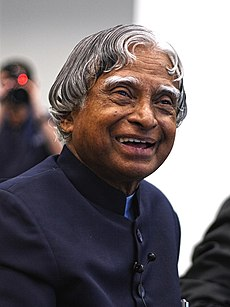

A.P.J Abdul Kalam

The missile man of India
- 1931: Born on 15th October
- 1955: Kalam moved to Madras to study aerospace engineering in Madras Institute of Technology
- 1960: Joined the Aeronautical Development Establishment of the DRDO
- 1964: Transferred to the Indian Space Research Organisation (ISRO)
- 1970: Developed the Polar Satellite Launch Vehicle (PSLV) and SLV-III projects
- 1980: Developed missiles like Agni and Prithvi under Integrated Guided Missile Development Programme (IGMDP)
- 1981: Honoured with the Padma Bhushan
- 1990: Honoured with the PadmaVibhushan
- 1992: Served as the Chief Scientific Adviser to the Prime Minister and Secretary of the Defence Research and Development Organisation from July 1992 to December 1999
- 1997: Received the Bharat Ratna
- 1998: Developed a low cost coronary stent, named the "Kalam-Raju Stent"
- 2002: Became the 11th President of India
- 2012: Designed a rugged tablet computer for health care in rural areas, which was named the "Kalam-Raju Tablet"
- 2013: Recipient of the Von Braun Award from the National Space Society
- 2015: Was confirmed dead of a sudden cardiac arrest